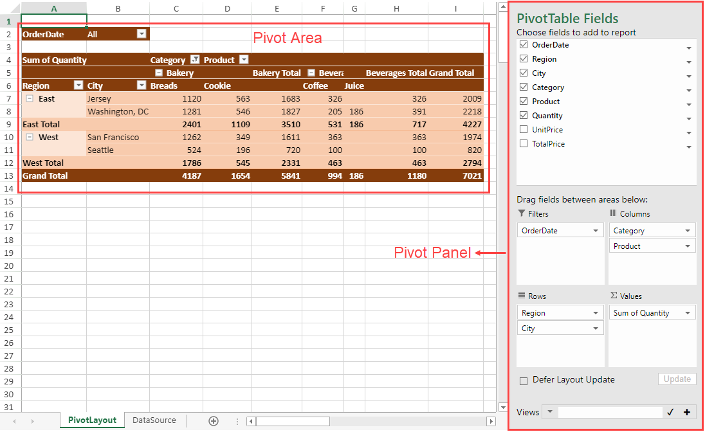
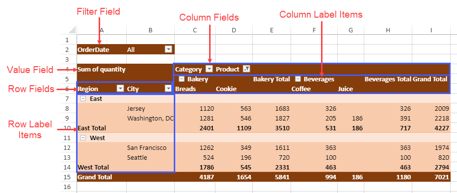
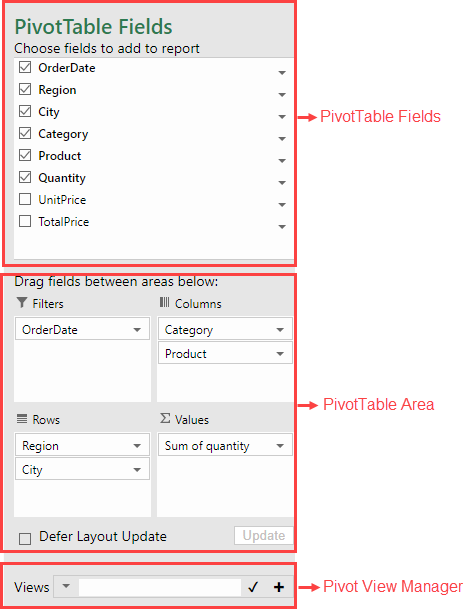
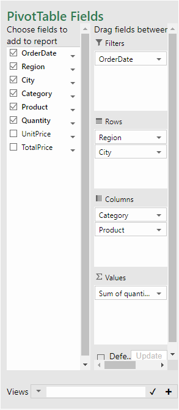
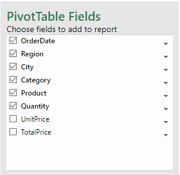
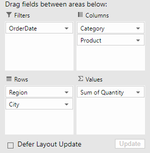
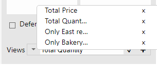

This topic covers the basic information related to pivot table components and their terminology.
The below image shows the Pivot Area (containing a pivot table) and Pivot Panel in a spreadsheet.

The pivot area displays the pivot table which contains various fields and label items as shown in the below image:

The pivot panel is a task pane which can be used to add, remove, drag and move fields in a pivot table easily. The pivot table panel consists of PivotTable Fields, PivotTable Area and Pivot View Manager section as shown in the below image:

You can also customize the layout of the pivot panel by using the panelLayout option. The above image shows the default panel layout (stack) whereas the below image shows the 'flow' pivot panel.

The following example code sets the pivot panel layout to flow:
| Javascript |
Copy Code
|
|---|---|
var layoutType = panel.panelLayout();
panel.panelLayout(GC.Spread.Pivot.PivotPanelLayoutType.flow);
|
|
The Pivot Table Fields section displays the fields from the data source, which can be added to a pivot table. You can select or unselect these fields to get the desired pivot table view.

The following example code shows how to hide the PivotTable Fields section from the pivot panel.
| Javascript |
Copy Code
|
|---|---|
// Hide the "PivotTable fields" section var panel = new GC.Spread.Pivot.PivotPanel("myPivotPanel", myPivotTable, document.getElementById("panel")); panel.sectionVisibility(GC.Spread.Pivot.PivotPanelSection.area | GC.Spread.Pivot.PivotPanelSection.viewList); |
|
The Pivot Table Area is a section of the pivot panel which displays the row, column, value and filter fields of a pivot table. You can simply drag and drop the pivot table fields across these areas to switch between different pivot table views.

The following table describes the above areas:
| Area | Description |
| Rows | Displays as rows in a pivot table with Row Labels as the values for selected fields. |
| Columns | Displays as columns in a pivot table with Column Labels as the values for selected fields. |
| Filters | Used for filter operation in a pivot table. |
| Values | Displays the statistics data for selected field. |
The following example code shows how to hide the Pivot Table Area section from the pivot panel.
| Javascript |
Copy Code
|
|---|---|
// Hide the "PivotTable Area" section var panel = new GC.Spread.Pivot.PivotPanel("myPivotPanel", myPivotTable, document.getElementById("panel")); panel.sectionVisibility(GC.Spread.Pivot.PivotPanelSection.fields | GC.Spread.Pivot.PivotPanelSection.viewList); |
|
The Pivot view manager can be used to manage views of the pivot table. It can quickly restore the state of the pivot table saved at a certain moment. The following image shows the different saved views of pivot table in the view manager.

The following example code shows how to hide the Pivot View Manager section from the pivot panel.
| Javascript |
Copy Code
|
|---|---|
// Hide the "Pivot View Manager" section var panel = new GC.Spread.Pivot.PivotPanel("myPivotPanel", myPivotTable, document.getElementById("panel")); panel.sectionVisibility(GC.Spread.Pivot.PivotPanelSection.fields | GC.Spread.Pivot.PivotPanelSection.area); |
|
For more details, refer to Pivot View Manager topic.